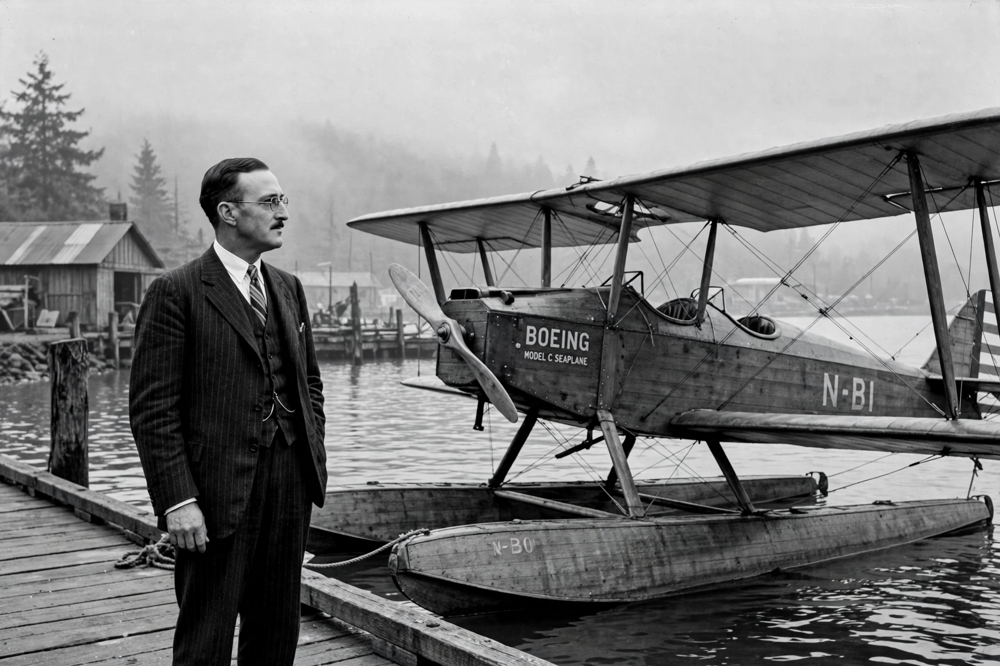

| William E. Boeing | |
|---|---|
| Born | October 1, 1881, Detroit, Michigan, U.S. |
| Died | September 28, 1956 (aged 74), Puget Sound, Washington, U.S. |
| Education | Yale University (left 1903) |
| Occupation | Industrialist, aviation pioneer |
| Known for | Founder of the Boeing Company |
William Edward Boeing (October 1, 1881 – September 28, 1956) was an American aviation pioneer who founded the Pacific Aero Products Company in Seattle in 1916, renamed the Boeing Airplane Company the following year. The company, which he led until 1934, grew into one of the largest aircraft manufacturers in the world. See Aerospace manufacturer.

Boeing was born in Detroit to a wealthy timber family of German descent (the family name was originally Böing). He studied at Yale's Sheffield Scientific School but left before graduating, moving to the Pacific Northwest, where he prospered in the timber business and bought extensive land around Seattle.
Fascinated by flight after seeing an aeroplane at the 1909 Alaska–Yukon–Pacific Exposition, Boeing took flying lessons from Glenn Martin in 1915 and bought a Martin seaplane. When its repair was delayed he resolved, with his friend George Conrad Westervelt, to build a better aircraft: the B&W Seaplane, which first flew on June 29, 1916. He founded Pacific Aero Products on July 15, 1916. During the First World War the company built seaplane trainers for the U.S. Navy; afterwards Boeing diversified into airmail, founding Boeing Air Transport in 1927, which grew into United Aircraft and Transport Corporation, an empire combining aircraft manufacture with airlines including the future United Airlines.
The Air Mail Act of 1934 forced the dissolution of the holding company, separating manufacturing from air transport. Boeing, disgusted by the antitrust action, resigned and sold his shares, leaving aviation entirely. He spent his later years in real-estate development and thoroughbred horse breeding, and served as a consultant to his old company during the Second World War. He died aboard his yacht in Puget Sound in 1956, three days before his 75th birthday. Boeing Field in Seattle and the William E. Boeing Department of Aeronautics at the University of Washington bear his name.